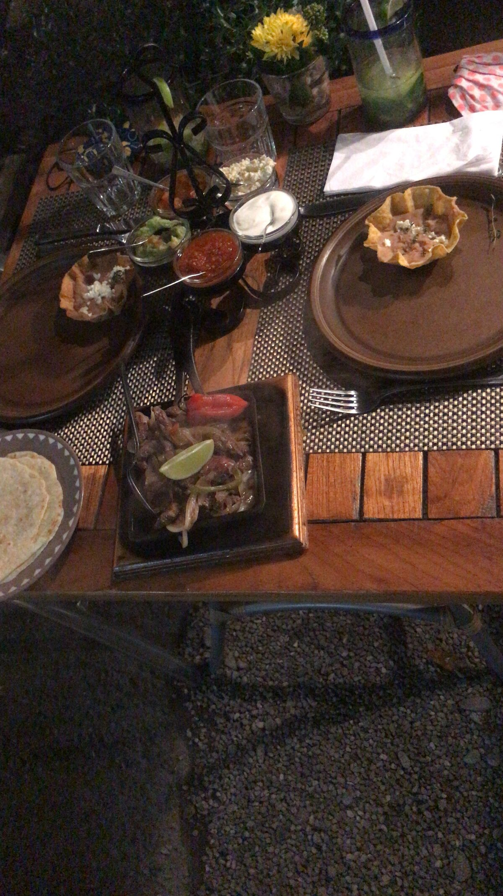
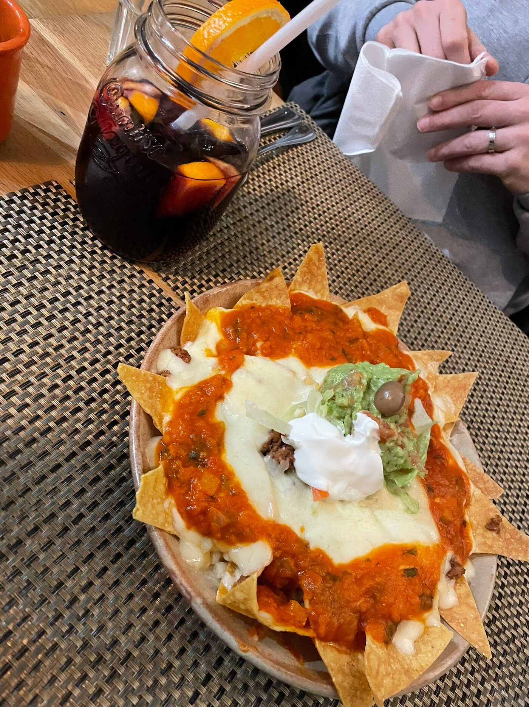
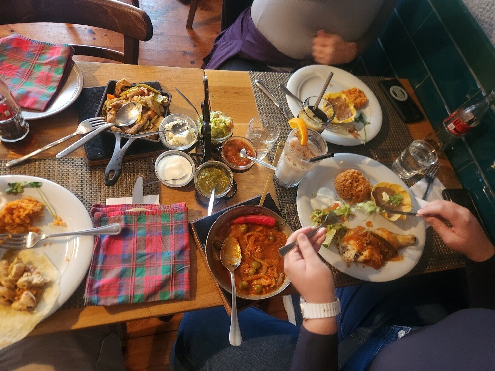
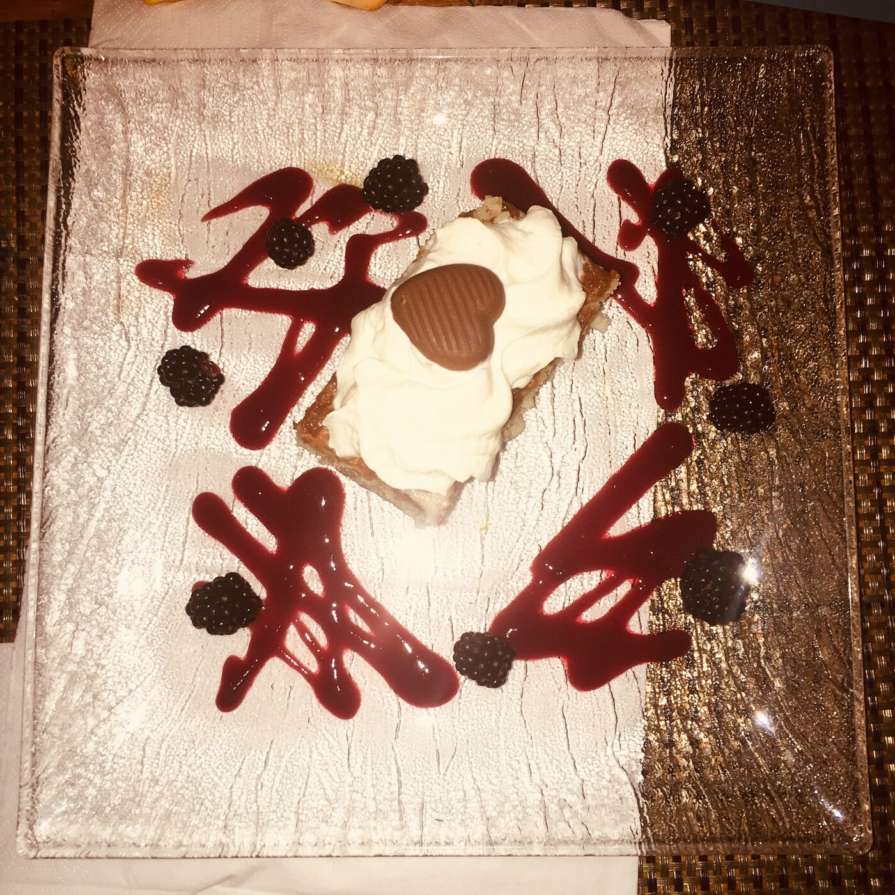
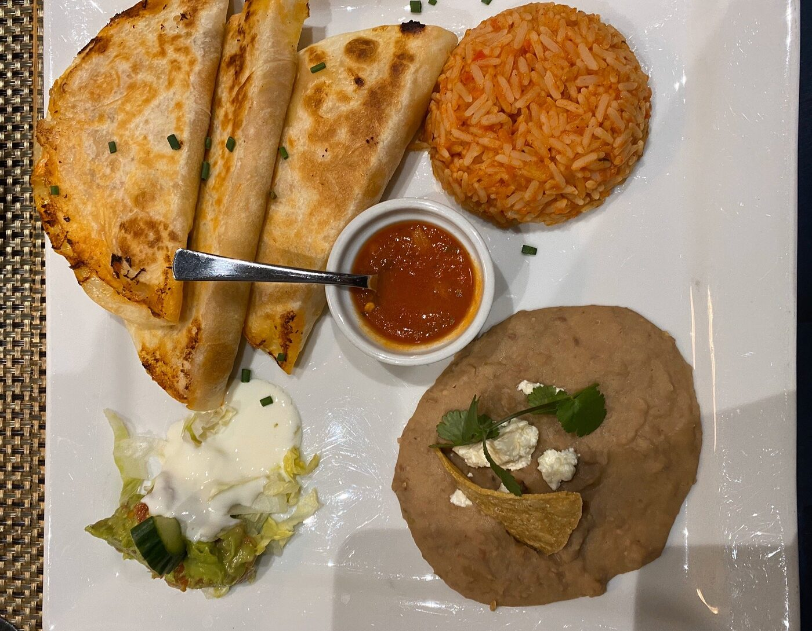
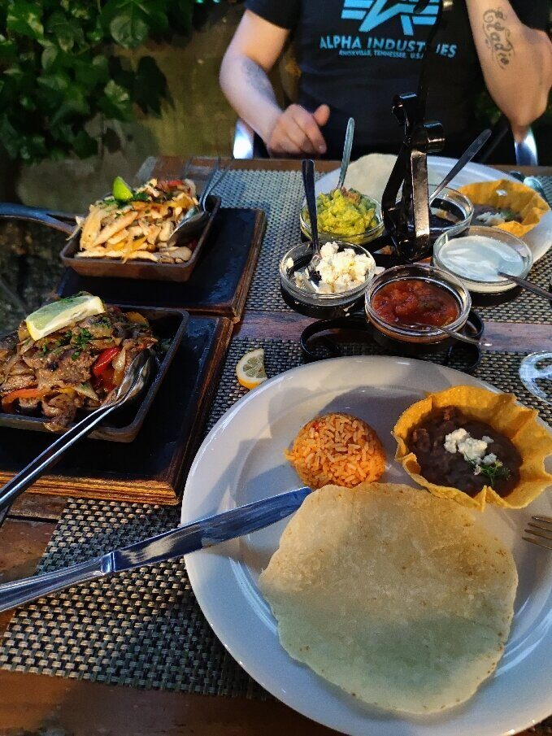
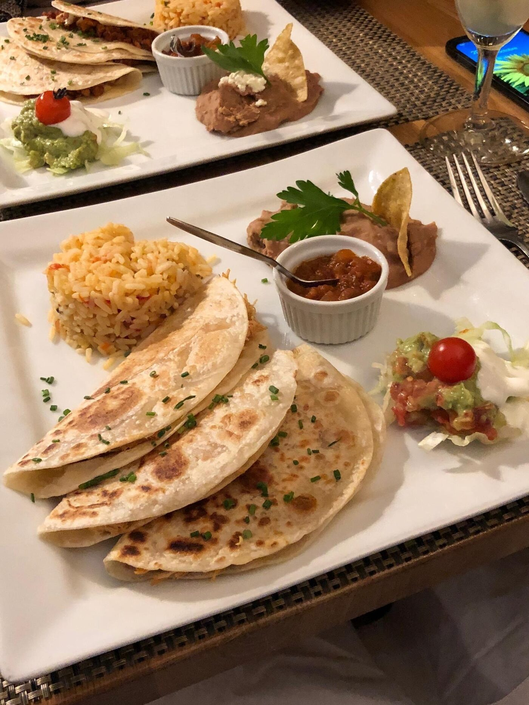

Cantina mexicaine · La Jonction, Genève
Le Mexique fait maison, à la Jonction.
Tacos à la tortilla de maïs véritable, fajitas, margaritas : depuis 2018, une cantina familiale chaleureuse au cœur de Genève — saluée par plus de 500 avis.

La maison
Une cantina familiale, depuis 2018
Le Mexicain a ouvert ses portes à la Jonction en 2018 — une petite adresse familiale qui sert une cuisine mexicaine généreuse et authentique, dans une salle joliment décorée prolongée d’une terrasse-jardin.
Tortillas de maïs véritables, plats faits maison : en quelques années, la maison s’est hissée parmi les meilleures tables mexicaines de Genève — 209ᵉ sur 1 882 restaurants et distinction Travelers’ Choice sur TripAdvisor, plus de 500 avis et une note de 4,8 sur Google.
Aux fourneaux comme en salle, une équipe de quelques personnes — et un patron que les avis saluent pour son accueil.
- Terrasse-jardin
- Options végétariennes
- À l’emporter
- Cartes acceptées
- Accès PMR
- WiFi gratuit
- Service à table



En images



Contact
Contactez-nous
Une question ou une demande particulière ? Appelez-nous, écrivez-nous, ou envoyez-nous un message ci-dessous.
Avis
Ce que disent nos clients
Plus de 500 avis sur Google, et une distinction Travelers’ Choice sur TripAdvisor.
- 4,8 / 5 · 504 avis Google
- 4,7 / 5 · TripAdvisor (39)
- 🏆 Travelers’ Choice · 209ᵉ / 1 882 à Genève
Une expérience exceptionnelle du début à la fin. Service attentionné et chaleureux. Tacos à la tortilla de maïs, chimichangas, gambas a la diabla et tres leches : tout était excellent.
Nous venons du Texas, alors le Tex-Mex, on connaît : les fajitas au poulet étaient délicieuses, avec une sauce verte parfaite.
Patron adorable, service au top, qualité des plats impeccable.
Restaurant excellent, imaginatif et inventif, avec un jardin bucolique.
Nous trouver
Au cœur de la Jonction
Accès
Restaurant accessible aux personnes à mobilité réduite. Terrasse-jardin aux beaux jours. Cartes de paiement acceptées, WiFi gratuit.
| Lundi | Fermé |
|---|---|
| Mardi | 12:00–14:30 · 18:30–22:30 |
| Mercredi | 12:00–14:30 · 18:30–22:30 |
| Jeudi | 12:00–14:30 · 18:30–22:30 |
| Vendredi | 12:00–14:30 · 18:30–23:00 |
| Samedi | 18:30–23:00 |
| Dimanche | Fermé |